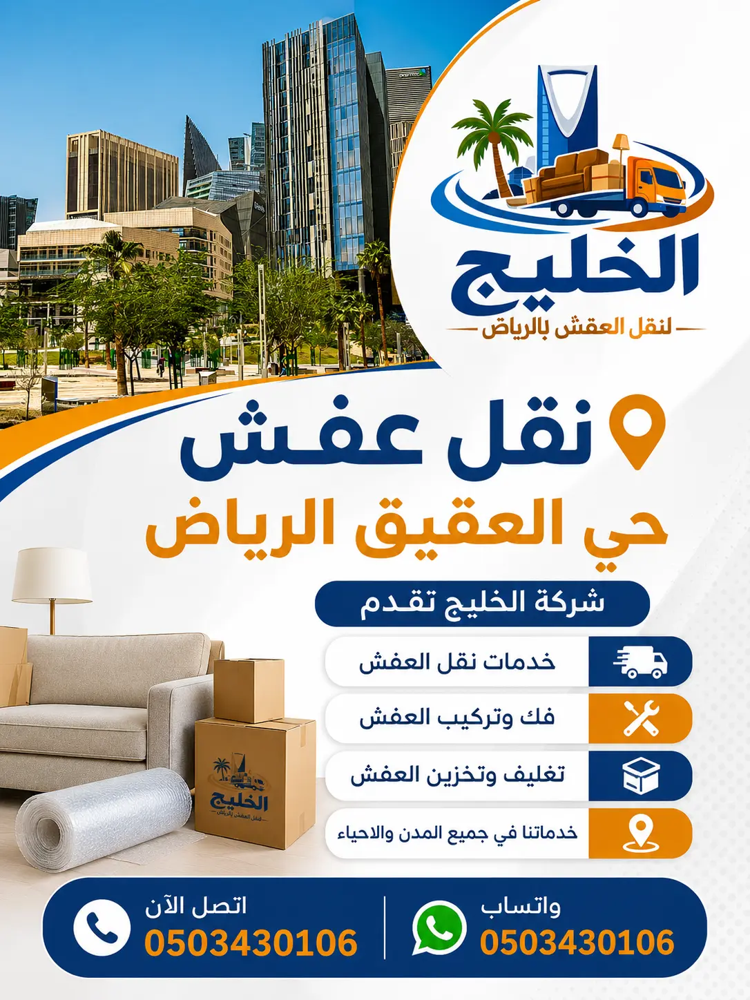

نقل عفش حي العقيق بالرياض
خدمات متكاملة لنقل الأثاث المنزلي والمكتبي داخل حي العقيق ومنه وإليه، مع عناية دقيقة بفك وتركيب وتغليف الأثاث واستخدام سيارات نقل مجهزة لحماية كافة منقولاتك.
فك وتركيب متخصص
فنيون مدربون للتعامل مع غرف النوم والمطابخ والقطع الخشبية والأثاث المعقد بعناية تامة.
تغليف عالي الجودة
استخدام الفقاعات الهوائية والكراتين المقواة والبطانيات الواقية لحماية المنقولات من الصدمات.
سيارات نقل مجهزة
دينات مقفلة ومجهزة بأنظمة تثبيت لمنع احتكاك الأثاث والتحميل المنظم لضمان سلامة الوصول.
خدمة نقل العفش في حي العقيق بالرياض
تعتبر خدمة نقل عفش حي العقيق بالرياض حلاً شاملاً للأفراد والعائلات والشركات الراغبة في الانتقال السلس داخل هذا الحي الحيوي أو منه إلى أي وجهة أخرى في العاصمة. يعتمد نجاح عملية الانتقال على التخطيط المنظم والتعامل المحترف مع كل قطعة أثاث، لضمان وصول المقتنيات بحالتها الأصلية دون خدوش أو أضرار.
تشمل الخدمة التي تقدمها شركة الخليج دورة انتقال كاملة؛ تبدأ بالمعاينة وتقدير الاحتياجات وتحديد حجم الشاحنة والعمالة المطلوبة، تليها مرحلة الفك الدقيق للأثاث الكبير، ثم التغليف المتقن بمواد حماية متخصصة، والتحميل المحكم داخل الشاحنات، وصولاً إلى التفريغ وإعادة التركيب والترتيب في الموقع الجديد حسب رغبة العميل.
يتميز حي العقيق بموقعه المحوري في شمال الرياض وقربه من شرايين مرورية رئيسية ونهضة عمرانية تشمل مجمعات سكنية وعمائر حديثة وفللاً راقية. هذا التنوع العمراني يتطلب معرفة بطبيعة الشوارع ومداخل المباني والارتفاعات لتنظيم عملية النقل بسلاسة وتفادي أي عوائق في المداخل أو المصاعد.

نقل العفش في حي العقيق بالرياض: ما الذي يجب مراعاته؟
تتسم عمليات نقل الأثاث في حي العقيق بخصوصية ترتبط بالنمط السكني والمعماري للحي. لتنفيذ النقل بكفاءة عالية، يجب أخذ العوامل التالية في الحسبان:
طبيعة الوحدات السكنية والمصاعد
يضم حي العقيق العديد من العمائر السكنية الحديثة، مما يتطلب التأكد مسبقاً من أبعاد المصاعد وسعتها، ومدى ملائمة المداخل للأثاث الضخم لتجنب احتكاك الجدران أو تلف الزوايا.
الأدوار العليا ومسارات السلالم
في الأدوار المرتفعة أو المباني التي تفتقر لمصعد يلائم القطع الكبيرة كالكنب والخزائن العريضة، يتم تجهيز أدوات حمل متخصصة أو الاستعانة بونش رفع خارجي لحماية الأثاث.
مواقف سيارات النقل والشارع
تتطلب بعض الشوارع الداخلية في الحي تنسيقاً مبكراً لوقوف شاحنة النقل بمحاذاة المدخل الرئيسي دون إعاقة حركة المرور أو مضايقة الجيران، مع التحميل والتنزيل المنظم.
الحماية من الغبار وعوامل الطقس
نظراً للأجواء الجافة في الرياض، يعتمد النقل على سيارات مغلقة ومحكمة العزل، مع تغليف الأثاث والمفروشات بالبلاستيك والاسترتش للحفاظ على نظافتها التامة.
خدمات نقل الأثاث في حي العقيق
نوفر باقة مرنة من خدمات نقل الأثاث المنزلي والمكتبي لتلبية متطلبات مختلف المساحات والميزانيات بحي العقيق:
نقل أثاث الشقق السكنية في العقيق
خدمة مخصصة للشقق بمختلف مساحاتها (من استوديوهات إلى شقق عائلية واسعة)، تشمل فك الغرف وتغليف الأجهزة المنزلية ونقلها عبر سيارات مجهزة تناسب حجم المسكن. يمكنك أيضاً التعرف على حلولنا في نقل أثاث الشقق بالرياض.
نقل أثاث الفلل والمنازل المستقلة
تتطلب الفلل فرق عمل متعددة لتنظيم غرف النوم المتعددة والمجالس والمطابخ والحدائق، مع تخصيص شاحنات نقل متعددة لإنجاز الانتقال في يوم واحد بأمان. تعرف على المزيد عبر صفحة نقل أثاث الفلل بالرياض.
النقل الداخلي بين أحياء الرياض
سواء كان انتقالك محلياً داخل حي العقيق أو من العقيق إلى أحياء شمال وشرق ووسط وجنوب الرياض، يتم تنظيم مسارات سير سريعة ومباشرة تتجنب أوقات الاختناقات المرورية.
فك وتركيب الأثاث بحي العقيق
تعتبر مرحلة فك وتركيب الأثاث من أدق المراحل في عملية النقل. يضم فريقنا نجارين محترفين يمتلكون المهارة في التعامل مع مختلف أنواع الخشب والموديلات، مما يضمن الحفاظ على سلامة المفصلات والمسامير وعدم تفكك الهيكل الداخلي للأثاث.
- غرف النوم الرئيسية والأطفال: فك الدواليب الكبيرة، والأسرة، والتسريحات وترقيم أجزائها لتركيبها بنفس التوازن الأصلي.
- المطابخ والأرفف: فك وحدات المطبخ بحذر وإعادة ضبطها وتركيبها في المنزل الجديد.
- أثاث ايكيا والأثاث الحديث: خبرة في التعامل مع أنظمة التجميع الحديثة والكتالوجات الخاصة بها.
- الأجهزة المساندة والستائر: إمكانية المساعدة في فك وتركيب الستائر واللوحات والمكيفات كخدمة متكاملة.
يمكنك الاطلاع على تفاصيل خدماتنا الشاملة عبر صفحة فك وتركيب العفش بالرياض.
هل تحتاج نجار فك وتركيب؟
نوفر نجارين متخصصين مع كافة المعدات اللازمة لفك وتركيب أثاثك في حي العقيق بدقة وسرعة.
طلب فني نجارتغليف وحماية المنقولات أثناء النقل
التغليف السليم هو خط الدفاع الأول لمنع أي احتكاك أو كسر أثناء النقل. نوفر خامات تغليف احترافية تناسب طبيعة كل قطعة:
بلاستيك الفقاعات
حماية ممتازة للقطع الزجاجية، والمرايا، والشاشات، والتحف من الصدمات.
كراتين مقواة
أحجام متعددة لتعبئة أدوات المطبخ والكتب والمقتنيات الصغيرة بطريقة منظمة.
بطانيات التغليف
أقمشة سميكة تغطي الأخشاب والأسطح المدهونة لمنع الخدوش أثناء التحميل.
رول الاسترتش الناعم
عزل الكنب والمفروشات والمراتب وتثبيتها لحمايتها من الغبار والأتربة.
للمزيد من الإرشادات، يمكنك قراءة دليلنا حول تغليف العفش بالرياض وأفضل طرق تغليف الأثاث المنزلي.
نقل الأثاث الثقيل وأوناش الرفع بحي العقيق
تحتوي المنازل والفلل الحديثة في حي العقيق على قطع أثاث ضخمة تتطلب تجهيزات خاصة للتعامل معها، مثل أطقم الكنب الملكية، وطاولات الطعام الرخامية، والخزائن المصمتة، والأجهزة الثقيلة.
أحزمة ومعدات الرفع الميكانيكية: تستخدم لتوزيع الثقل وتسهيل حركة العمالة داخل الممرات الضيقة دون خدش الجدران.
أوناش الرفع الهيدروليكية: حل مثالي لتنزيل ورفع القطع الكبيرة عبر الشرفات والنوافذ في الأدوار العليا عند تعذر استخدام الدرج أو المصعد. يمكنك مراجعة خدمة ونش رفع الأثاث بالرياض.
أسعار نقل العفش في حي العقيق: ما الذي يحدد التكلفة؟
تتفاوت تكلفة نقل العفش بناءً على طبيعة كل عملية نقل، حيث تخضع لحساب دقيق يراعي الجهد والمعدات المستهلكة بدلاً من الأرقام العشوائية. تشمل أهم محددات السعر:
حجم الأثاث وعدد الغرف
يحدد كمية المنقولات حجم شاحنة النقل المناسبة (دينا واحدة أو أكثر) وعدد أفراد طاقم العمل المطلوب للتحميل والتنزيل.
خدمات الفك والتركيب
عدد القطع التي تتطلب فكاً وتركيباً كغرف النوم الكبيرة والمطابخ والأجهزة والستائر يؤثر في زمن وتكلفة الخدمة.
مستوى التغليف ومواده
استخدام التغليف الشامل متعدد الطبقات (كراتين + فقاعات + فوم + استرتش) يوفر أعلى درجات الحماية.
الأدوار وتوفر المصعد أو الونش
النقل من أو إلى أدوار مرتفعة بدون مصعد يتطلب جهداً مضاعفاً، أو الاستعانة بونش رفع خارجي كخيار مستقل.
كيف تحصل على سعر مناسب لنقل العفش في حي العقيق؟
لتحقيق أقصى استفادة وتوفير في تكلفة النقل دون المساس بأمان وسلامة الأثاث، نوصي باتباع الخطوات التالية:
-
فرز المقتنيات والتخلص من الزوائد: قم بفرز الأغراض غير المستخدمة أو التالفة والتبرع بها أو التخلص منها قبل موعد النقل، لتقليل حجم المنقولات وعدد الصناديق.
-
تعبئة الأغراض الشخصية مسبقاً: يمكنك تعبئة الملابس والكتب والأدوات الشخصية في حقائب وكراتين مسبقاً، مما يوفر وقت فريق العمل ويركز جهدهم على الأثاث الثقيل.
-
تحديد الخدمات المطلوبة بدقة: حدد مسبقاً القطع التي تحتاج إلى فك وتركيب من قبل نجار، والقطع التي يمكن نقلها كما هي دون تفكيك.
-
الحجز المسبق والتنسيق المبكر: حجز موعد النقل بوقت كافٍ يتيح اختيار التوقيت الأكثر ملاءمة وتنسيق الشاحنة والعمالة دون ضغط المواعيد المفاجئة.
كيف تستعد لعملية نقل الأثاث؟
التنظيم المسبق يختصر ساعات من العمل ويمنع فقدان أو تلف الأشياء المهمة. إليك خطوات الاستعداد الأساسية:
تفريغ الخزائن والأجهزة
تفريغ الدواليب من الملابس، وفصل الثلاجة وتفريغها قبل النقل بعدة ساعات لإذابة الجليد وتجفيفها.
حفظ الأوراق والمجوهرات
جمع الوثائق الرسمية، المفاتيح، المقتنيات الثمينة، والأجهزة المحمولة في حقيبة يد خاصة تنقلها بنفسك.
تأمين مسار الخروج والدخول
إخلاء الممرات ومداخل الأبواب والتنسيق مع إدارة العمارة لحجز المصعد وموقف الشاحنة صباح يوم النقل.
للمزيد من التفاصيل، راجع مقالنا عن نصائح قبل نقل العفش ومقال أخطاء شائعة أثناء نقل الأثاث وكيفية تجنبها.
أفضل أوقات نقل العفش في حي العقيق
يقع حي العقيق بالقرب من طرق رئيسية ذات كثافة مرورية عالية في أوقات الذروة. لذلك، فإن اختيار التوقيت المناسب يضمن سهولة حركة شاحنات النقل وسرعة الإنجاز:
تعرف على المزيد عبر مقال أفضل وقت لنقل العفش بالرياض.
خيارات تخزين الأثاث المؤقت بالرياض
في حال وجود فاصل زمني بين مغادرة سكنك القديم واستلام مسكنك الجديد في حي العقيق أو أثناء أعمال الترميم والتشطيب، نوفر حلول تخزين مرنة للأثاث المنزلي والمكتبي.
تشمل الخدمة تغليف الأثاث بالكامل بمواد مخصصة للحفظ طويل الأجل، وتخزينه في مستودعات منظمة ومقسمة وفق مساحات تناسب مختلف أحجام المنقولات، مع إعادة توصيله وتركيبه عند جاهزية موقعك الجديد. يمكنك مراجعة صفحة تخزين الأثاث بالرياض لمزيد من المعلومات.
عن شركة الخليج لنقل العفش بالرياض
تقدم شركة الخليج منظومة متكاملة في نقل وتغليف وتركيب الأثاث تغطي كافة أحياء العاصمة، مع اهتمام خاص بتلبية متطلبات سكان حي العقيق وأحياء شمال الرياض. نعتمد على كادر فني مدرب وشاحنات نقل حديثة لضمان أقصى درجات الأمان والالتزام بالمواعيد.
خدمات نقل العفش في أحياء الرياض القريبة
تغطي شركة الخليج مختلف أحياء شمال الرياض والمناطق المجاورة لحي العقيق بسيارات نقل سريعة وفنيين متخصصين:
أحياء شمال الرياض المجاورة
أحياء ومناطق أخرى بالرياض
الأسئلة الشائعة عن نقل العفش بحي العقيق
تعتمد التكلفة على كمية وحجم الأثاث، عدد الغرف المنقولة، الخدمات الإضافية مثل الفك والتركيب والتغليف، الدور الذي يتم النقل منه وإليه ومدى توفر مصعد، والحاجة إلى ونش رفع خارجي ومسافة النقل.
نعم، يتولى نجارون وفنيون متخصصون فك وتركيب مختلف أنواع غرف النوم والدواليب والمطابخ والقطع الخشبية بما في ذلك أثاث ايكيا والموديلات الحديثة بعناية ودقة.
نستخدم بلاستيك الفقاعات الهوائية للقطع الزجاجية والإلكترونيات، والكراتين المقواة للأواني والمقتنيات، والبطانيات المخصصة لحماية الخشب من الخدوش، إضافة إلى الاسترتش رول لحماية الكنب والمفروشات من الغبار.
نعم، يتوفر ونش رفع أثاث هيدروليكي مخصص للمباني المرتفعة والفلل لنقل القطع الثقيلة أو الكبيرة التي يصعب نقلها عبر السلالم والمصاعد الداخلية.
نعم، نقدم خدمة النقل من حي العقيق إلى كافة أحياء شمال وشرق وغرب وجنوب الرياض، كما نقدم النقل العكسي من أي حي داخل الرياض إلى حي العقيق.
تستغرق عملية نقل الشقة المتوسطة من 3 إلى 5 ساعات عمل تقريباً شاملة الفك والتغليف والنقل والتركيب، بينما تتطلب الفلل والمنازل الكبيرة وقتاً أطول يُحدد حسب حجم المنقولات.
يمكنك التواصل المباشر عبر الهاتف أو الواتساب على الرقم 0503430106 لتحديد متطلباتك وموقعك وموعد النقل المناسب، مع إمكانية التنسيق للمعاينة وتقدير الاحتياجات.
نعم، نقوم بنقل الثلاجات والغسالات وشاشات التلفزيون والأجهزة الكهربائية وتغليفها بالفقاعات والمواد الماصة للصدمات وتثبيتها بأحزمة مخصصة داخل سيارة النقل.
ننصح بفرز الأغراض مسبقاً، والاحتفاظ بالمقتنيات الثمينة والأوراق المهمة بشكل منفصل، وتفريغ الخزائن والثلاجات، والتنسيق لموقف شاحنة النقل لتسهيل التحميل.
نعم، نوفر خيارات تخزين الأثاث المنزلي والمكتبي في مستودعات مخصصة لحفظ المنقولات وتغليفها بعناية عند وجود حاجة للتخزين المؤقت قبل الانتقال.
هل تخطط لنقل أثاثك في حي العقيق قريباً؟
فريق شركة الخليج جاهز لمساعدتك في فك، وتغليف، ونقل أثاث منزلك أو مكتبك بأعلى معايير الأمان والتنظيم. تواصل معنا الآن للحصول على استشارة وتسعيرة دقيقة.